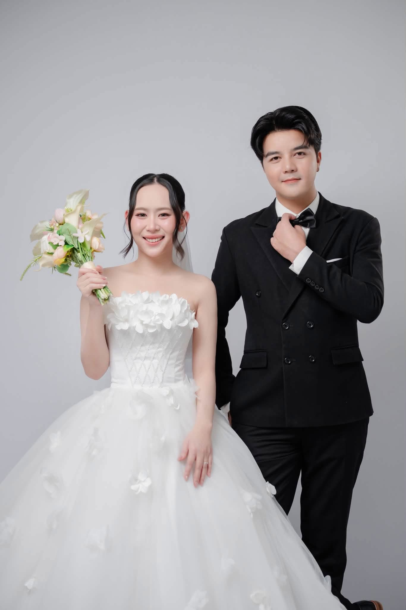

BEN ♥ MEGH
เบญจวรรณ โนภิชัย & พิทักษ์ ตลับนิล
วันศุกร์ที่ 4 ธันวาคม 2569
ฝากคำอวยพรเป็นวิดีโอ
ให้บ่าวสาวกันนะ
ยกหูโทรศัพท์แล้วพูดได้เลย · อัดได้ไม่เกิน 1 นาที
เบญจวรรณ โนภิชัย & พิทักษ์ ตลับนิล
วันศุกร์ที่ 4 ธันวาคม 2569
ฝากคำอวยพรเป็นวิดีโอ
ให้บ่าวสาวกันนะ
ยกหูโทรศัพท์แล้วพูดได้เลย · อัดได้ไม่เกิน 1 นาที



#BMWedding
คลิปของคุณจะอยู่ในอัลบั้มของบ่าวสาวและแขกในงาน